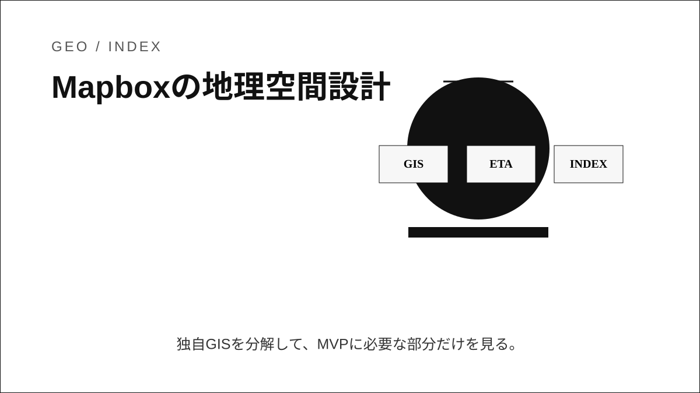
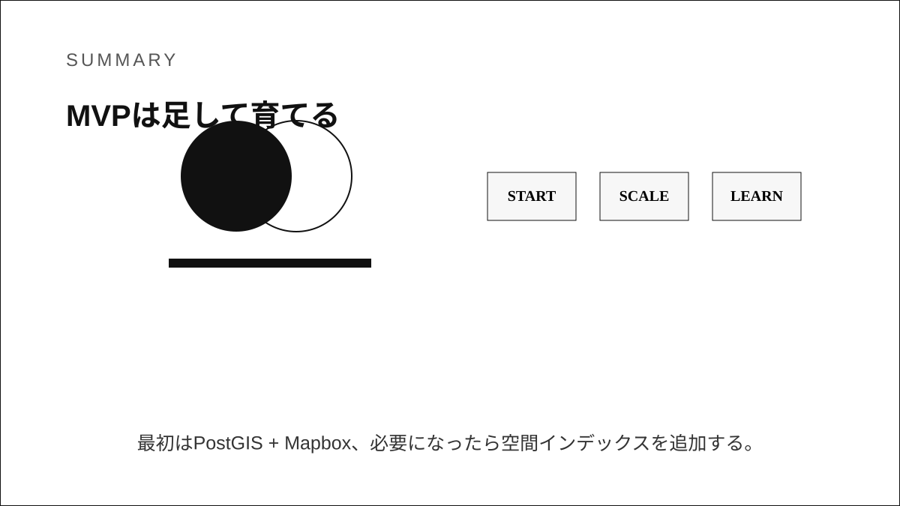

Question Note / Geospatial Architecture
Mapbox: Vector Tiles・Navigation・Map Matchingの分担

何をしている企業か
開発者向けの地図表示、スタイル、ナビゲーション、ルーティング、Map Matchingなどを提供する地図プラットフォーム企業。
位置情報で解いている課題
アプリ開発者は、地図タイル表示、道路ネットワーク、経路探索、GPS軌跡補正、音声案内を自前で全て作ると重い。Mapboxはこの重い地図基盤をAPIとSDKとして提供する。

公開されている技術情報
使っている地理空間技術
Vector Tilesは地図要素をタイルとして配信し、クライアント側でスタイルを当てる仕組み。Directions APIは経路探索、Map Matching APIはGPS点列を道路へ合わせる。Navigation SDKは案内UI、進行、リルートなどをまとめる。
「独自GIS」と呼べる部分
独自GIS的な部分は、地図データ配信、レンダリング、ルーティング、マップマッチング、SDK体験を統合している点。PostGISのようなDB演算ではなく、地図プロダクト基盤としての独自性が強い。
PostGISとの違い
PostGISは自社データの検索・判定・保存に向く。Mapboxは道路ネットワークや地図表示、経路計算をサービスとして提供する。DBと地図APIは競合ではなく接続する層が違う。
アーキテクチャ上どこに入るか
Mobile App
↓
Backend API
↓
Geospatial Engine / Index
↓
DB / Cache
↓
Map / Navigation APIこの図でいう Geospatial Engine / Index が、空間インデックス、ルーティング、ETA、マッチング、リアルタイム位置キャッシュを吸収する場所です。PostGISは主に DB / Cache 側の保存・検索基盤として使い、Mapbox等の地図APIは Map / Navigation API 側に置きます。
トラックナビアプリに応用できる点
トラックナビMVPではMapboxを地図表示・ルート案内に使い、自社側はPostGISでユーザー拠点、休憩所、規制、案件を管理する。GPS軌跡が荒い場合はMap Matchingを検討する。
まだ真似しなくてよい点
独自タイル生成、独自ナビSDK、独自ルーティングエンジンはMVPでは不要。
将来スケールしたときに参考になる点
大型車制約、施設内ルート、独自POIが増えたら、Mapbox APIと自社PostGISデータの合成レイヤーを育てる。

結論
Mapboxの事例は、独自GISを「巨大な地図DB」ではなく、空間インデックス、ルーティング、ETA、マッチング、リアルタイム位置キャッシュ、分析基盤の組み合わせとして読むと理解しやすいです。トラックナビMVPでは、まずPostgreSQL + PostGIS + Mapboxで実用範囲を作り、後からH3/S2/Redis GEO/独自インデックスを足す順番が安全です。